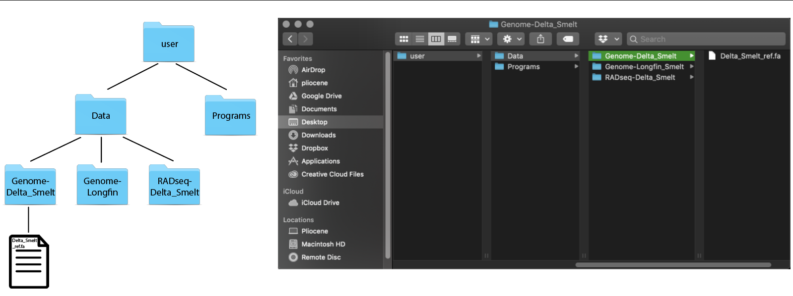

1 Introduction to the UNIX Command Line
This two hour workshop will introduce attendees to the UNIX command line, which is the main way to interact with remote computers. We will cover computing concepts, file systems and directory structure, and some of the most important commands for working with remote computers.
Today and tomorrow we’ll be using an interactive Web site running on a binder. To start your binder, please click on the “launch” button below; it will take up to a minute to start.

NOTE: This lesson was adapted from Data Carpentry’s Introduction to the Command Line for Genomics lesson and the Lab for Data Intensive Biology’s Advanced Beginner/Intermediate Shell workshop.
1.1 Introduction to UNIX
1.1.1 Learning Goals
- visualize file/directory structures
- understand basic shell vocabulary
- gain exposure to the syntax of shell & shell scripting
- look at the contents of a directory
- find features of commands with
man - commands:
pwd,ls,cd,man
1.1.1.1 What is the shell and what is the terminal?
The shell is a computer program that uses a command line interface (CLI) to give commands made by your keyboard to your operating system. Most people are used to interacting with a graphic user interface (GUI), where you can use a combination of your mouse and keyboard to carry out commands on your computer. We can use the shell through a terminal program.
Everything we can do using our computer GUI, we can do in the shell. We can open programs, run analyses, create documents, delete files and create folders. We should note that folders are called directories at the command line. For all intents and purposes they can be used interchangeably but if you’d like more information please see “The folder metaphor” section of Wikipedia.
The ease of getting things done via the shell will increase with your exposure to the program.
Go ahead and open a new terminal window in binder by clicking on “Terminal”.
When we open up terminal in binder we will see a a line of text. This is a prompt statement. It can tell us useful things such as the name of the directory we are currently in, our username, or what computer we are currently running terminal on.
Let’s take a look around. First, we can use the print working directory command see what directory we are currently located in.
pwdThis gives us the absolute path to the directory where we are located. An absolute path shows the complete series of directories you need to locate either a directory or a file starting from the root directory of your computer.
What is the root? A useful way to start thinking about directories and files is through levels. At the highest level of your computer, you have the root directory. Everything that is contained in your computer is located in directories below your root directory. 
We can also look at the contents of the directory by using the ls
(“list”) command:
lsThis command prints out a list of files and directories that are located in our current working directory. We’ve preloaded some data into the binder, so we have a subdirectory data/ that we can look at.
To change the working directory, we need to use the cd (“change
directory”) command. Let’s move into the data directory.
cd dataLet’s have a look around.
lsWe can see the following files:
MiSeq Slide1.jpg hello.sh nano1.png README.md gvng.jpg nano2.png
However, this directory contains more than the eye can see! To show hidden files we can use the -a option.
ls -aWe will see the following:
. MiSeq Slide1.jpg hello.sh nano1.png .. README.md gvng.jpg .hidden nano2.png
Three new items pop up ., .. and .hidden.
Using options with our commands allows us to do a lot! But how did we know to add -a after ls? Most commands offer a --help. Let’s look at the available options that ls has:
ls --helpHere we see a long list of options. Each option will allow us to do something different.
CHALLENGE Try to find the option that allows you to differentiate between directories and executable files when using ls. Hint: look for the word classify. (You can also look at the ls man page if you prefer!
We can also combine commands:
ls -aFlThis combination of options will list all the contents of the directory and differentiate between file types.
1.3 Viewing & Searching
1.3.1 Learning Goals
- looking inside files
- search for keywords within files
- commands:
less,head,tail,grep
A big part of data science is making sure what you expect in a particular file is what you have in that file. There are a few ways to look at the contents of a file. We’ve already seen how to print the entirety of a file to the stdout of our cat command. We can also look at files using the less command. Less is a safe way of looking at the contents of a file without the ability to change it. (We’ll talk more about text files and editing them in the second workshop!)
Starting from the data/ directory in our home directory
cd ~/data/let’s look at some sequence data in a fastq file format.
cd MiSeq
less F3D0_S188_L001_R1_001.fastqWe can see a bunch of sequence data! Use the up, down, left and right arrows to look through the folder a bit. Then press q to quit less.
A lot of the time we want to know if a file contains what we expect. Many of the sequence files in this directory have the file ending .fastq. We expect these files to contain information in a particular format throughout the file with four lines of information for each sequence string. Looking through a million line file using less will take a long time. Rather than manually looking through the file we can print only a portion of the files contents to the terminal:
head F3D0_S188_L001_R1_001.fastq@M00967:43:000000000-A3JHG:1:1101:18327:1699 1:N:0:188 NACGGAGGATGCGAGCGTTATCCGGATTTATTGGGTTTAAAGGGTGCGTAGGCGGCCTGCCAAGTCAGCGGTAAAATTGCGGGGCTCAACCCCGTACAGCCGTTGAAACTGCCGGGCTCGAGTGGGCGAGAAGTATGCGGAATGCGTGGTGTAGCGGTGAAATGCATAGATATCACGCAGAACCCCGATTGCGAAGGCAGCATACCGGCGCCCTACTGACGCTGAGGCACGAAAGTGCGGGGATCAAACAG + #>>AABABBFFFGGGGGGGGGGGGGGGGHHHHHHHGGGHHHHHGHGGGGGGGHGGGGGGHHHHHHHHHHGGGGGHHHHGHGGGGGGHHBGHGDGGGGGHHHGGGGHHHHHHHHGGGGGHG@DHHGHEGGGGGGBFGGEGGGGGGGG.DFEFFFFFFFDCFFFFFFFFFFFFFFFFFFFFFFFFFFDFDFFFEFFCFF?FDFFFFFFFFAFFFFFFFFFFFBDDFFFFFEFADFFFFFBAFFFA?EFFFBFF @M00967:43:000000000-A3JHG:1:1101:14069:1827 1:N:0:188 TACGGAGGATGCGAGCGTTATCCGGATTTATTGGGTTTAAAGGGTGCGTAGGCGGCCTGCCAAGTCAGCGGTAAAATTGCGGGGCTCAACCCCGTACAGCCGTTGAAACTGCCGGGCTCGAGTGGGCGAGAAGTATGCGGAATGCGTGGTGTAGCGGTGAAATGCATAGATATCACGCAGAACCCCGATTGCGAAGGCAGCATACCGGCGCCCTACTGACGCTGAGGCACGAAAGTGCGGGGATCAAACAG + 3AA?ABBDBFFBEGGEGGGGAFFGGGGGHHHCGGGGGGHFGHGGCFDEFGGGHGGGEGF1GGFGHHHHHGGEGGHHHHHFGGGGGGHHHHHGGGGCDDGHHGGGFHHHHHHHHCD@CCHGGGGHEHGGG@GFGGGGGGG@BGGGEGCEBFFFBFFB;9@EFFFEFFFFFFFFFFFFAFBBBFFFFFBBBFFFFBBBFFFFFFFFFFFBBBBBBBFFFFFFFFFDDFAFFFFF.AF9/FBBBBB.EAFFE?F @M00967:43:000000000-A3JHG:1:1101:18044:1900 1:N:0:188 TACGGAGGATGCGAGCGTTGTCCGGAATCACTGGGCGTAAAGGGCGCGTAGGCGGTTTAATAAGTCAGTGGTGAAAACTGAGGGCTCAACCCTCAGCCTGCCACTGATACTGTTAGACTTGAGTATGGAAGAGGAGAATGGAATTCCTAGTGTAGCGGTGAAATGCGTAGATATTAGGAGGAACACCAGTGGCGAAGGCGATTCTCTGGGCCAAGACTGACGCTGAGGCGCGAAAGCGTGGGGAGCAAACA
head prints the first ten lines of a file out onto your screen.
We can look at the last ten lines of a file using the tail command:
tail F3D0_S188_L001_R1_001.fastqWe can see that our fastq files look a lot different than the fasta files:
head HMP_MOCK.v35.fasta>A.baumannii.1 TGGGGAATATTGGACAATGGGGGGAACCCTGATCCAGCCATGCCGCGTGTGTGAAGAAGGCCTTATGGTTGTAAAGCACTTTAAGCGAGGAGGAGGCTACTTTAGTTAATACCTAGAGATAGTGGACGTTACTCGCAGAATAAGCACCGGCTAACTCTGTGCCAGCAGCCGCGGTAATACAGAGGGTGCGAGCGTTAATCGGATTTACTGGGCGTAAAGCGTGCGTAGGCGGCTTATTAAGTCGGATGTGAAATCCCCGAGCTTAACTTGGGAATTGCATTCGATACTGGTGAGCTAGAGTATGGGAGAGGATGGTAGAATTCCAGGTGTAGCGGTGAAATGCGTAGAGATCTGGAGGAATACCGATGGCGAAGGCAGCCATCTGGCCTAATACTGACGCTGAGGTACGAAAGCATGGGGAGCAAACAGGATTAGATACCCTGGTAGTCCATGCCGTAAACGATGTCTACTAGCCGTTGGGGCCTTTGAGGCTTTAGTGGCGCAGCTAACGCGATAAGTAGACCGCCTGGGGAGTACGGTC >A.odontolyticus.1 TGGGGAATATTGCACAATGGGCGAAAGCCTGATGCAGCGACGCCGCGTGAGGGATGGAGGCCTTCGGGTTGTAAACCTCTTTCGCTCATGGTCAAGCCGCAACTCAAGGTTGTGGTGAGGGTAGTGGGTAAAGAAGCGCCGGCTAACTACGTGCCAGCAGCCGCGGTAATACGTAGGGCGCGAGCGTTGTCCGGAATTATTGGGCGTAAAGGGCTTGTAGGCGGTTGGTCGCGTCTGCCGTGAAATCCTCTGGCTTAACTGGGGGCGTGCGGTGGGTACGGGCTGACTTGAGTGCGGTAGGGGAGACTGGAACTCCTGGTGTAGCGGTGGAATGCGCAGATATCAGGAAGAACACCGGTGGCGAAGGCGGGTCTCTGGGCCGTTACTGACGCTGAGGAGCGAAAGCGTGGGGAGCGAACAGGATTAGATACCCTGGTAGTCCACGCTGTAAACGTTGGGCACTAGGTGTGGGGGCCACCCGTGGTTTCTGCGCCGTAGCTAACGCTTTAAGTGCCCCGCCTGGGGAGTACGGCC >B.cereus.1 TAGGGAATCTTCCGCAATGGACGAAAGTCTGACGGAGCAACGCCGCGTGAGTGATGAAGGCTTTCGGGTCGTAAAACTCTGTTGTTAGGGAAGAACAAGTGCTAGTTGAATAAGCTGGCACCTTGACGGTACCTAACCAGAAAGCCACGGCTAACTACGTGCCAGCAGCCGCGGTAATACGTAGGTGGCAAGCGTTATCCGGAATTATTGGGCGTAAAGCGCGCGCAGGTGGTTTCTTAAGTCTGATGTGAAAGCCCACGGCTCAACCGTGGAGGGTCATTGGAAACTGGGAGACTTGAGTGCAGAAGAGGAAAGTGGAATTCCATGTGTAGCGGTGAAATGCGTAGAGATATGGAGGAACACCAGTGGCGAAGGCGACTTTCTGGTCTGTAACTGACACTGAGGCGCGAAAGCGTGGGGAGCAAACAGGATTAGATACCCTGGTAGTCCACGCCGTAAACGATGAGTGCTAAGTGTTAGAGGGTTTCCGCCCTTTAGTGCTGAAGTTAACGCATTAAGCACTCCGCCTGGGGAGTACGGCC >B.vulgatus.1 TGAGGAATATTGGTCAATGGGCGCAGGCCTGAACCAGCCAAGTAGCGTGAAGGATGACTGCCCTATGGGTTGTAAACTTCTTTTATAAAGGAATAAAGTCGGGTATGGATACCCGTTTGCATGTACTTTATGAATAAGGATCGGCTAACTCCGTGCCAGCAGCCGCGGTAATACGGAGGATCCGAGCGTTATCCGGATTTATTGGGTTTAAAGGGAGCGTAGATGGATGTTTAAGTCAGTTGTGAAAGTTTGCGGCTCAACCGTAAAATTGCAGTTGATACTGGATATCTTGAGTGCAGTTGAGGCAGGCGGAATTCGTGGTGTAGCGGTGAAATGCTTAGATATCACGAAGAACTCCGATTGCGAAGGCAGCCTGCTAAGCTGCAACTGACATTGAGGCTCGAAAGTGTGGGTATCAAACAGGATTAGATACCCTGGTAGTCCACACGGTAAACGATGAATACTCGCTGTTTGCGATATACGGCAAGCGGCCAAGCGAAAGCGTTAAGTATTCCACCTGGGGAGTACGCCG >B.vulgatus.2 TGAGGAATATTGGTCAATGGGCGAGAGCCTGAACCAGCCAAGTAGCGTGAAGGATGACTGCCCTATGGGTTGTAAACTTCTTTTATAAAGGAATAAAGTCGGGTATGGATACCCGTTTGCATGTACTTTATGAATAAGGATCGGCTAACTCCGTGCCAGCAGCCGCGGTAATACGGAGGATCCGAGCGTTATCCGGATTTATTGGGTTTAAAGGGAGCGTAGATGGATGTTTAAGTCAGTTGTGAAAGTTTGCGGCTCAACCGTAAAATTGCAGTTGATACTGGATATCTTGAGTGCAGTTGAGGCAGGCGGAATTCGTGGTGTAGCGGTGAAATGCTTAGATATCACGAAGAACTCCGATTGCGAAGGCAGCCTGCTAAGCTGCAACTGACATTGAGGCTCGAAAGTGTGGGTATCAAACAGGATTAGATACCCTGGTAGTCCACACGGTAAACGATGAATACTCGCTGTTTGCGATATACGGCAAGCGGCCAAGCGAAAGCGTTAAGTATTCCACCTGGGGAGTACGCCG
Each sequence entry for a fasta formatted file contains only two lines of information for each sequence string.
Another useful thing to do is to be able to search the contents of files for a particular string of characters you would like to find. Let’s say you’d like to find the sequence CATTAG in your files. We can use the file pattern searcher grep to look for our favorite sequence:
grep CATTAG F3D0_S188_L001_R2_001.fastqWe can also use the wildcard regular expression to search CATTAG in all of the fastq files located in our current working directory:
grep CATTAG *.fastqCHALLENGE: What line does CATTAG occur on in F3D141_S207_L001_R1_001.fastq? (HINT: Use grep --help to search for grep options related to line number)
1.4 File Manipulation
1.4.1 Learning Goals
- commands
for,basename,echo
1.4.2 Renaming a bunch of files
Let’s make sure we’re in the right directory- the one that contains all of our data files.
cd ~/data/MiSeqFor our first task, let’s pretend that we want to rename all of the fastq files to be .fq files instead (this is a surprisingly useful specific skill, even if you can’t immediately think of why you would want to do that!). Here, we get to use two of my favorite commands - ‘for’ and ‘basename’.
for lets you do something to every file in a list. To see it in action:
for i in *.fastq
do
echo $i
doneThis is running the command echo for every value of the variable ‘i’, which is set (one by one) to all the values in the expression *.fastq.
If we want to get rid of the extension ‘.fastq’, we can use the basename command:
for i in *.fastq
do
basename $i .fastq
doneNow, this doesn’t actually rename the files - it just prints out the name, with the suffix ‘.fastq’ removed. To rename the files, we need to capture the new name in a variable:
for i in *.fastq
do
newname=$(basename $i .fastq).fq
echo $newname
doneWhat $( ... ) does is run the command in the middle, and then replace the $( ) with the output of running the command.
Now we have the old name ($i) and the new name ($newname) and we’re ready to write the rename command –
for i in *.fastq
do
newname=$(basename $i .fastq).fq
echo mv $i $newname
doneQuestion: why did I put echo here?
Now that we’re pretty sure it all looks good, let’s run it for realz:
for i in *.fastq
do
newname=$(basename $i .fastq).fq
mv $i $newname
doneand voila, we have renamed all the files!
Side note: you may see backquotes used instead of $(...). It does the same thing but is trickier to get right, so we teach $(...) instead of `.
1.5 Some final notes
This lesson focused on file and directory exploration because that’s something everyone needs to know, and all these commands will work on pretty much any computer that is running a UNIX compatible shell (including Mac OS X and Windows Subsystem for Linux). We’ll get into a broader range of tasks soon, promise!
The binder and this documentation page will stay working for the foreseeable future, so please feel free to come back and revisit some of these commands!
We will explore more UNIX commands over the next few workshops!
Google (and especially stackoverflow) is your friend! Use Internet search whenever you have questions about what a command does, or what commands to use to achieve a particular tasks.